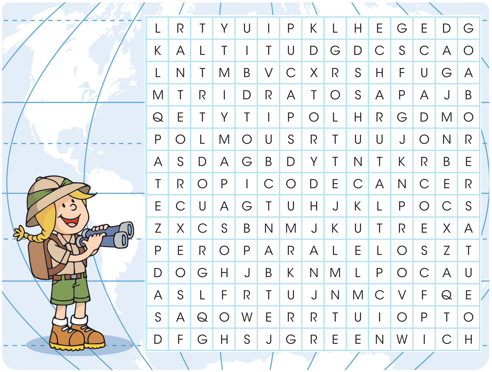

Conozco la Tierra
¿Dónde hace calor y dónde hace frío?
Contesta lo siguiente, utilizando las respuestas en la sopa de letras. Consulta las páginas 18 y 19 de tu Atlas de Geografía del Mundo.
{{index+1}}.
{{i.p}}
